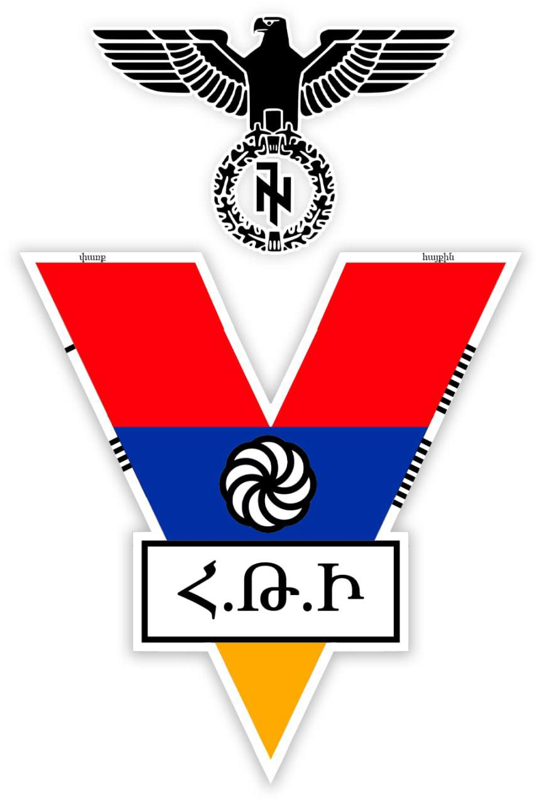
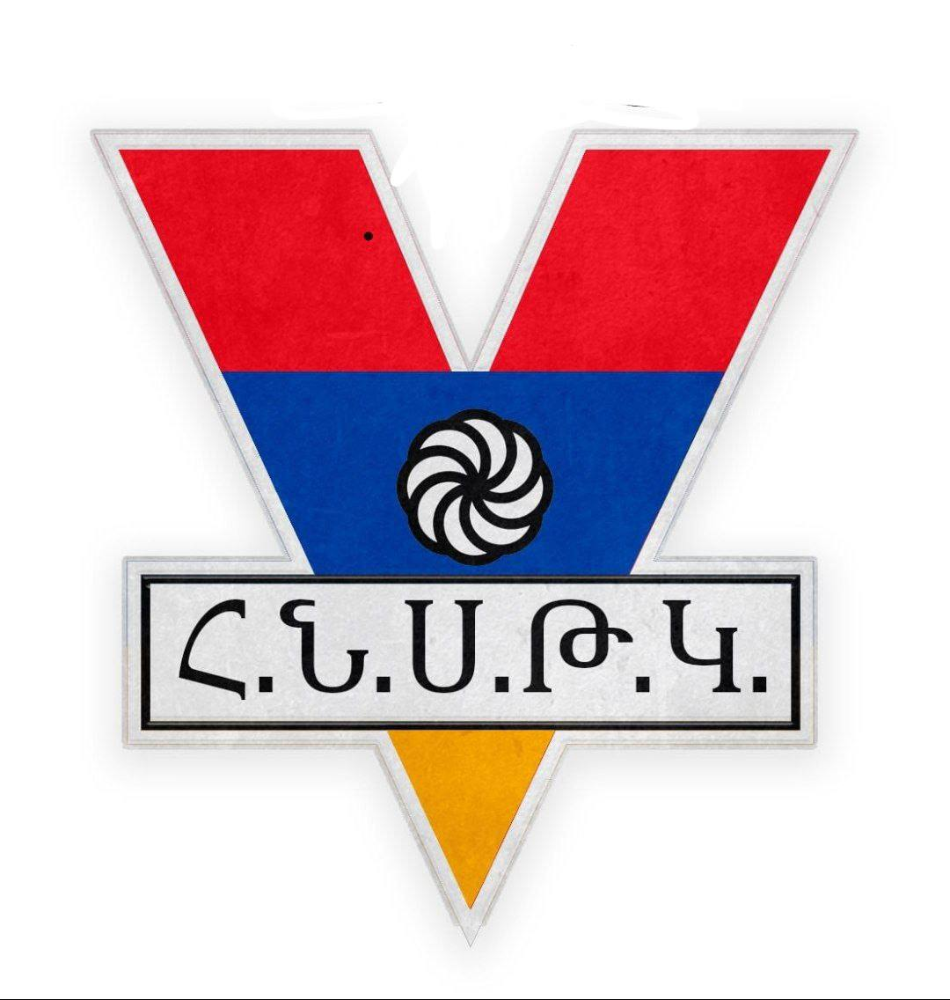

Հ․Թ․Ի․ Emblem 2025
The Emblem looks like letter V, that means vicotry and glory. The eagle means our freedom
Abbreviation of H.T.I. means հայ թագավորական իմպերիալիստներ (armenian monarchy imperialists)
Arevkhach means infinity, glory,fight and struggle
Our emblem has changed many times, here is an example of an old emblem(2024):
H.N.S.T.K.(հայկական նացիոնալիստական սակավաթիվ թագավորական կուսակցություն) is abbreviation.
Its translation is Armenian nationalist monarchy party having few members
We also have our symbol. What it means know only members of party.

it is called "Kosogor". Kosogor was created on march 29,2024 by owner of the party.
It shows a mountain with a scythe, it means "who comes to our mountains,will be dead!"
About Հ․Թ․Ի․ party
Հ․Թ․Ի․ party is owned by an Armenian student. The most important idea of our party is far-right political movement, militarism, imperialism and nationalism. We must bring back the Armenian Empire. We are not scared of our power, we must say and bring truth to people living in Armenia. Our history is not long, but in future we will take power and will bring glory to our Fatherland
Հ․Թ․Ի․ party will have its own book in the future, which will be titled "Հ․Թ․Ի․, միշտ հայ"